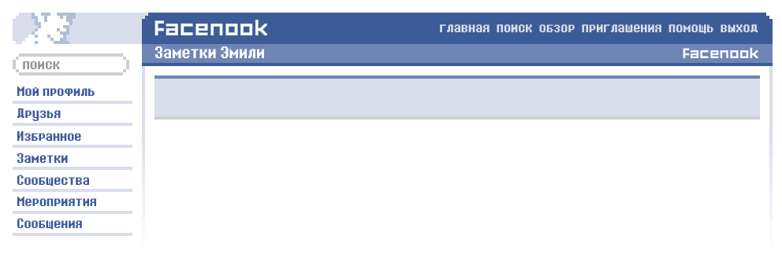

Келли сказала сделать это...
13 октября, 2006 в 18:23
Что заставило тебя полюбить того человека, в которого ты влюблена сейчас?
Он очень милый.
Признайся, кого бы ты хотела сейчас поцеловать?
Джеффа
Какие люди тебе не нравятся?
Лжецы или лицемеры.
Ты веришь в 11:11?
Во что конкретно? В то, что оно существует? =p
Если бы ты лежала в больнице на искусственном жизнеобеспечении, пришел бы твой бывший тебя навестить?
Не знаю. Наверное да.
Вы когда-нибудь видели обнаженным человека, с которым только что разговаривали по телефону?
Келли? Наверное, ха-ха-ха.
Есть ли кто-нибудь, с кем бы ты хотела провести время прямо сейчас?
Да, конечно!
Ты считаешь курение привлекательным?
Нет.
Вспомни последнего человека, который тебя обидел. Ты можешь его простить?
Я не знаю.
Ты когда-нибудь спала на диване с кем-нибудь?
Да! На ночевке!
Ты боишься влюбиться?
Конечно нет!
Когда ты в следующий раз увидишься со своим лучшим другом?
Наверное, прямо сейчас, ха-ха.
Кому ты доверяешь на 100%?
Своим друзьям.
Сколько у тебя собак?
Ноль. Но я мечтаю завести одну.
Хочешь что-то, чего не можешь иметь?
Да.
Ты упрямая?
Иногда могу быть.
У тебя был друг, с которым вы дружили много лет, а потом он просто взял и исчез?
Да, был.
Что ты делала вчера вечером перед сном?
Общалася с людьми в интернете.
С кем ты в последний раз ездила на машине?
Я не знаю. Вроде бы с Келли.
Есть ли у тебя друзья, с которыми ты ни разу не ссорилась?
Да, конечно!
Ты подарила подарок человеку, с которым последний раз чатилась, на его последний день рождения?
Ещё бы!
Смогла бы ты жить без человека, с которым недавно поссорилась?
Я, вообще-то, не ссорюсь с людьми.
У тебя есть друзья, которые постоянно болтают о своих парнях или девушках?
Да, так все делают.
Когда ты сегодня проснулась, у тебя были непрочитанные сообщения?
Да хахах. Я постоянно просыпаюсь с непрочитанными сообщениями.
Человеку, у которого ты в последний раз гостила, кто-нибудь нравится?
Я: Келли, тебе нравится кто-нибудь?
Келли: ТЫ ЖЕ ЗНАЕШЬ, ЧТО ДА.
Ты когда-нибудь видела, как кого-то заносили в машину скорой помощи?
Лично - не видела.
Во сколько ты проснулась в прошлую субботу? Почему?
Я не знаю. Просто потому-что проснулась?
У тебя распространенное имя?
Да, но ничего страшного.
Ты хочешь наладить отношения с кем-нибудь?
Конечно.
Что тебе больше нравится — звонить или писать SMS?
Скорре больше переписываться.
Если бы у тебя была возможность вернуться в прошлое и изменить одну вещь, что это было бы?
Я бы не участвовала в этом опросе, БУМ =p
Когда ты собираешься пойти на прогулку ночью, кому ты звонишь первому, чтобы он пошел с тобой?
Тебе*
От кого у тебя есть сообщения в телефоне?
Целая группа самых разных людей.
Ответь честно, чьи номера ты знаешь наизусть?
Э-э, свой домашний, родителей, Келли, есть ещё и другие.
Как у тебя в телефоне записана ваша мама?
Мама.
Вас раздражает, когда вам лгут?
Ну, это же очевидно.
Кто первым написал тебе сегодня — парень или девушка?
Парень.
Вспомни, как ты себя чувствовала в это же время в прошлом году — была ли ты счастлива?
Да, была.
Почему ты ненавидишь того человека, которого ненавидишь больше всего?
На самом деле я не слишком многих людей ненавижу.
Тебе не кажется, что ты зря тратишь время на человека, который тебе нравится?
Нет, именно поэтому он мне нравятся.
Тебе сейчас кого-то по-настоящему не хватает?
Да.
Знаете ли вы кого-нибудь, кто готов бросить всё и приехать к вам?
Да, есть несколько человек. Келли стоит примерно в метре от меня, так она тоже считается?
